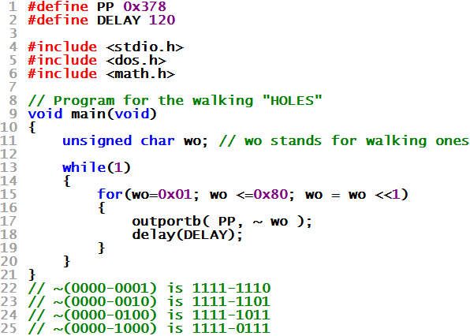

| WR Home Topic Home | Chapter: 1 2 |
| <Previous | Next> |
Chapter 02
Blinking the LEDs in a more controlled way !
Page 6
Walking Holes or Walking Zeros
After having the knowledge of Generalizing the output patterns, try to write a code for the pattern shown below:
1111 1110
1111 1101
1111 1011
1111 0111
1110 1111
1101 1111
1011 1111
0111 1111
Will you like to try writing some C-code for this ...
ELSE scroll down for solution

Are You thinking of something like
Outputting the following sequence?
1111 1110 = 0xFE
1111 1101 = 0xFD
1111 1011 = 0xFB
1111 0111 = 0xF7
1110 1111 = 0xEF
1101 1111 = 0xDF
1011 1111 = 0xBF
0111 1111 = 0x7F
And how to generalize the above sequence ?
What will happen if the Walking Ones is "Complemented" ?

| WR Home Topic Home | Chapter: 1 2 |
| <Previous | Next> |